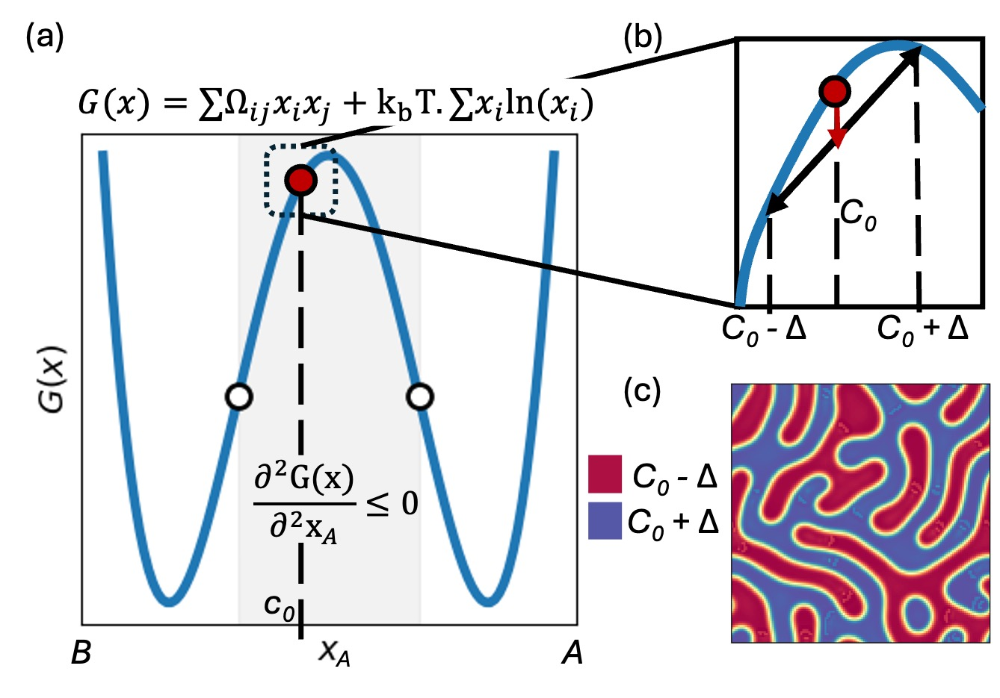
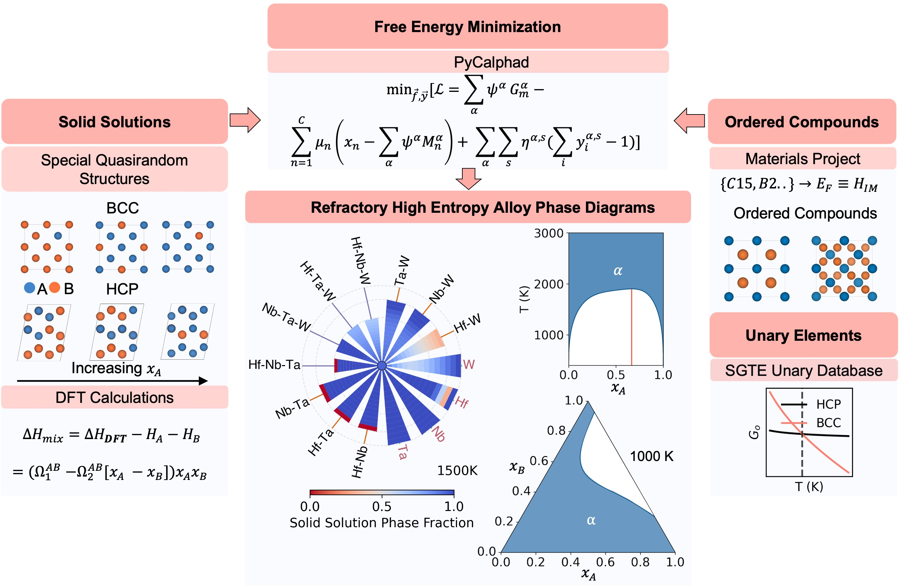

Phase stability
Calculate equilibrium phase fractions, phase compositions, and energy above the Gibbs-energy hull across temperature.
Flagship PhD work · Scientific software
Rapid Alloy Phase-field generaTOR is an open-source research platform for exploring phase stability in multi-principal-element and refractory alloys—through an interactive application or a reusable Python API.

From thermodynamic models to interpretable phase-stability maps.The problem
Designing multicomponent alloys means reasoning across composition, temperature, competing phases, and instability modes at once. RAPTor brings those calculations and their scientific context into a single workflow instead of leaving them scattered across scripts and one-off plots.
Core capabilities
RAPTor supports interactive exploration and programmatic studies while keeping the thermodynamic assumptions visible.
Calculate equilibrium phase fractions, phase compositions, and energy above the Gibbs-energy hull across temperature.
Track constrained-composition Hessian spectra, crossing temperatures, and the soft composition modes that drive instability.
Construct binary temperature–composition and isothermal ternary diagrams from a consistent calculation layer.
Survey high-dimensional alloy composition spaces through symmetry-preserving property maps.
Compare alloy families using stability metrics, rankings, and Pareto filtering.
Connect computed trends to provenance-preserving literature records and reviewed experimental evidence.
Research connection
RAPTor packages the thermodynamic, phase-field, spinodal, visualization, and evidence workflows developed across my doctoral research. It is designed both as a scientific instrument and as a reproducible foundation for subsequent studies.

Explore next
The tools are connected by a common goal: making difficult materials-science analysis more transparent and reusable.